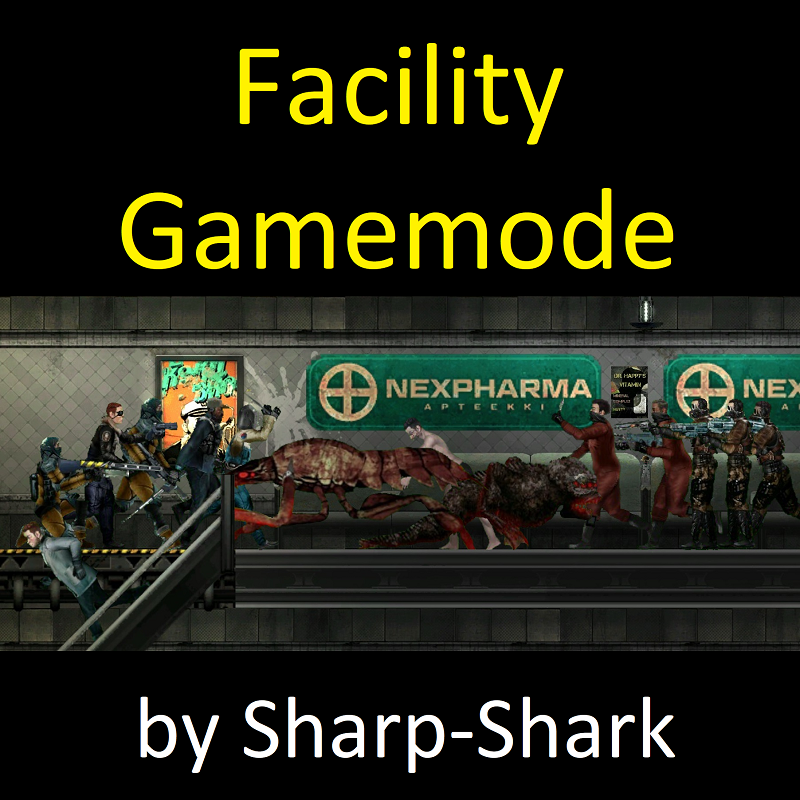

Facility Gamemode
Barotrauma mod made by Sharp-Shark inspired by SCP:SL.
Welcome to the Facility Gamemode Wiki
by Sharp-Shark
Discord Server
-
Steam Workshop
-
Github Repository
Guides
How to Host a Server
FG 101 - The Basics
Monsters
Mutated Mantis
Mutated Crawler
Husked Human
Terrorists
Inmate
JET
Nexpharma
Staff
Guards
MERCS
Items
Opium
Midazolam
ID Cards
Loot tables
[!] Links in
grey
are still to be done.